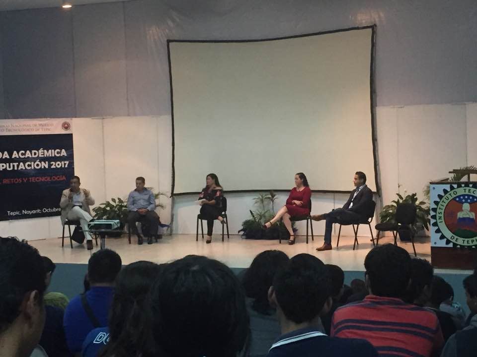

Criptografía Post-cuántica

Conferencista: Lic. Diego Armando Retana García.
Fecha: 17 de Octubre del 2017.
Hora: 12:30 pm.
Criptografía Post-cuántica
La conferencia Criptografía Post-cuántica fue dada por el Lic. Diego Armando Retana García, el estudio en el Civestav, y actualmente trabaja en Relativity 6.
Define la criptográfica post-cuántica como la ciencia que desarrolla técnicas matemáticas para cifrar información.
La criptografía es la base de cualquier mecanismo de seguridad informática. Se utiliza habitualmente en un login web, en el envío de correos electrónicos, o incluso cuando se produce la sincronización de archivos en la nube, entre otros.
La criptografía cuántica se lo pone difícil a las agencias de espionaje y a los cibercriminales. Mientras que los sistemas de cifrado actuales son seguros porque el intruso que intenta leer la información solo puede hacerlo resolviendo problemas complejos, en la criptografía cuántica tendría que violar las leyes de la mecánica cuántica para leer la información. La criptografía post-cuántica nos permite enviar información:
- Simétrica: La misma llave para cifrar y descifrar.
- Asimétrica: Dos llaves una privada y una pública.
Durante la conferencia nos habló sobre RSA es el programa que ellos utilizan actualmente.
RSA fue diseñado a finales de los años 70´s es un sistema criptográfico de clave pública. Es el primer y más utilizado algoritmo de este tipo y es válido tanto para cifrar como para firmar digitalmente.
El ordenador cuántico sería la otra gran amenaza a los sistemas de criptografía de clave pública actuales. Sería capaz de romper todos los algoritmos de cifrado, al ser capaz de factorizar a una velocidad muchísimo mayor (da igual lo grande que sea la clave).
Panel

Conferencista: Ex alumnos ITTepic.
Fecha: 17 de Octubre del 2017.
Hora: 18:00 pm.
Panel
En el panel de emprendedores dirigido por la M.E. Verónica Ramírez Jáuregui, estuvieron de invitados ex alumnos egresados del Instituto Tecnológico de Tepic, los cuales fueron la Ing. Obdulia, el Ing. Gerardo, Ing. Juan Manuel, y el Ing. Nicolás, ellos estuvieron hablando y opinando sobre lo que se necesita para ser un emprendedor y algunos consejos para comenzar un proyecto de nuestra carrera.
El Ing. Gerardo indico: Debemos planear una meta para poder cumplirla, El Ing. Juan Manuel dijo que él trabaja en INEGI, 30 años en experiencia laborar e indico que un emprendedor no es bueno si no tiene clientes, pero sin embargo debemos de arriesgar para poder ver si nuestro proyecto tiene éxito o no.
La M.E. Verónica Ramírez lanzo una pregunta:
- ¿Que tan importante es saber un segundo idioma? Ing. Obdulia: Aprovechar oportunidades y tiempos, es primordial, es bonito conocer otras culturas y otras lenguas para tener más oportunidades e interacciones.
- ¿Que es más importante emprender o emprenderse? Ing. Juan Manuel: es mejor emprender cuando recién egresado ya que se te abren más oportunidades durante estas primeras etapas.
- ¿Que tan difícil fue ser empresario?
- ¿Creen que existan oportunidades de emprendimiento en el estado de Nayarit para los alumnos de Ingeniería en Sistemas Computacionales e Ingeniería en Tecnología de la Información y Comunicaciones?
Ing. Nicolás respondió: depende de la idea del negocio para ir a otro país es indispensable el inglés este es el idioma del negocio.
Ing. Gerardo: nos habló sobre telemedicina el cual habla sobre transportes de enfermos de distancias largas tenemos que hacer las cosas con ganas y entregar todo hacer las cosas con pasión,
Ing. Obdulia: No es difícil emprender un proyecto, lo tienes que hacer con ganas y cuando lo logras es una gran satisfacción.
Ing. Nicolás: No es algo que yo buscaba, en una escala del 1 al 10 considero de difícil un 20% ser un empresario pero las situaciones me hicieron tomar decisiones.
Ing.Nicolas: Considero que en nuestro estado se puede ser un buen emprendedor siempre y cuando se tengan las ganas y se de la dedicación correcta.
Ing.Juan Manuel: Creo que si es necesario viajar a otro lado para emprender un proyecto ya que en el estado estamos muy limitados a emprender, pero algo muy importante que se debe tomar en en cuenta es que si nos vamos a otro lado siempre tenemos que regresar a nuestro hogar ya que hayamos cumplido nuestro poryecto.
Dispositivos robóticos y su integración en aplicaciones con realidad virtual
Conferencista: Dr. Ulises Saldivar Colado.
Fecha: 18 de Octubre del 2017.
Hora: 16:00 pm.
Dispositivos robóticos y su integración en aplicaciones con realidad virtual
En la conferencia de Dispositivos robóticos y su integración en aplicaciones con realidad virtual se vieron todos aquellos elementos que se requieren para que un robot sea capaz de realizar las tareas que se le indiquen y de esta forma funcione como una persona que piensa, el Dr. Ulises Saldívar inicio la conferencia con el termino
¿Que es realidad virtual?
Es la representación sintética de la realidad, esta representación puede ser en 3D de la realidad, además de ser visual, auditiva y táctil. Su objetivo principal es enviar información hacia el mundo real, recibir información del mundo real y la interacción con usuarios en el mundo real.
Ambiente sintético
- Modelo de objetos
- Mallas poligonales
- Objetos sólidos
- Teclados
- Ratón
- Joystick
- Kinect
- Interfaz Óptica
- Sensación de pesos
- Cybergraps
- Cyberforce
Manipulación de Objetos
-
Seleccionar el objeto que se desea manipular
- Selección avanzada
- Detención de colisiones
- PQP
- CULLDE
- RAPID
-
Definir el algoritmo de selección
- Cursor virtual
- Mano virtual
- Tomar el objeto
- Realizar las transformaciones geométricas necesarias
- Objetos definidos en el sistema de coordenadas globales para ejercer fuerza a un cuerpo.